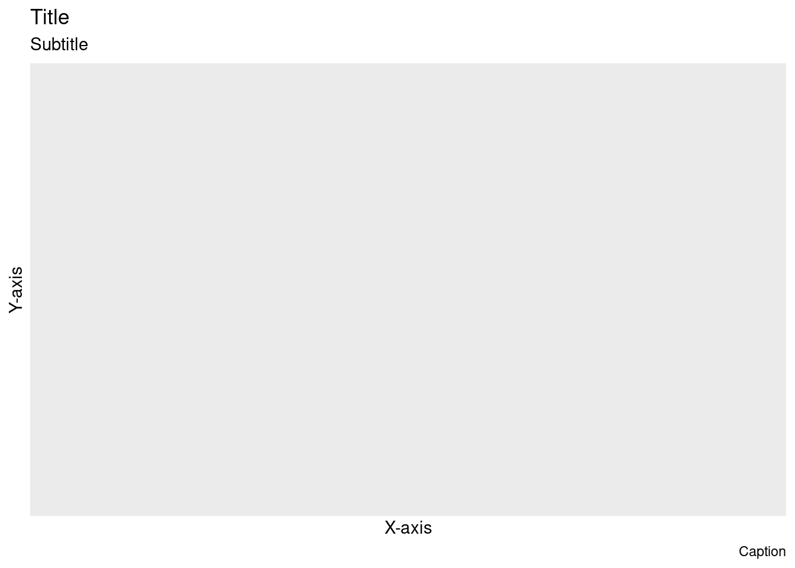
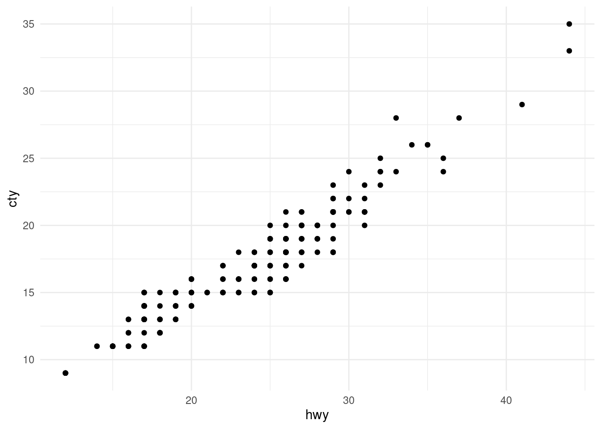
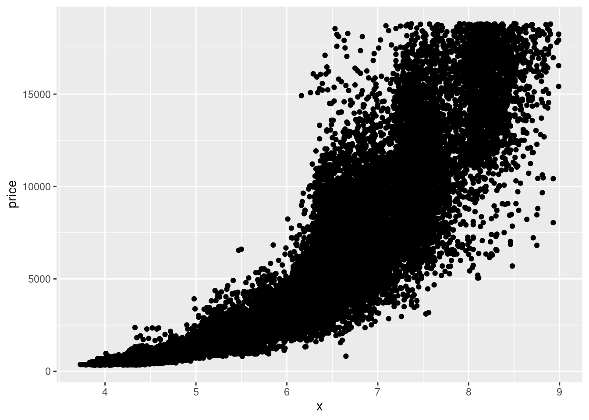

Show me the code
# Load libraries
library(tidyverse) # Data wrangling and plots
library(here) # File control in project
# Load the cleaned soldiers dataset
source(here("scripts", "01_import.R"))source(here("scripts", "01_import.R")) in the chunk# Load libraries
library(tidyverse) # Data wrangling and plots
library(here) # File control in project
# Load the cleaned soldiers dataset
source(here("scripts", "01_import.R"))You’ll need to guess a little because you haven’t seen all the datasets and functions yet, but use your common sense! See if you can predict what each plot will look like before running the code.
ggplot(mpg, aes(cty, hwy)) + geom_point()
ggplot(diamonds, aes(carat, price)) + geom_point()
ggplot(economics, aes(date, unemploy)) + geom_line()
ggplot(mpg, aes(cty)) + geom_histogram()Use the mpg dataset.
mpg datasetUse one or more of: ?mpg, head(), glimpse(), summary(), and/or skim()
?mpg
mpg %>% head()
mpg %>% glimpse()
mpg %>% skimr::skim() # or library(skimr) and then mpg %>% skim()colour, shape, and size aesthetics.Use this basic code, and add/change the colour, shape, and size aesthetics.
ggplot(mpg, aes(cty, hwy)) +
geom_point()
## Examples
# Categorial
ggplot(mpg, aes(cty, hwy, colour = class)) +
geom_point()
# Continuous
ggplot(mpg, aes(cty, hwy, size = displ)) +
geom_point()
# Continuous
ggplot(mpg, aes(cty, hwy, color = hwy)) + # Notice hwy is mapped to both y axis and color
geom_point()
## A continuous variable doesn't work for shape
ggplot(mpg, aes(cty, hwy, shape = displ)) +
geom_point()
# Multiple Categorical - a legend for each aesthetic is created
ggplot(mpg, aes(cty, hwy, colour = class, shape = fl)) +
geom_point()ggplot(data = mpg) +
geom_point(mapping = aes(x = displ, y = hwy, color = "blue"))# If you want all the points to be colored blute, then color = "blue" must be placed outside the aes() function.
ggplot(data = mpg) +
geom_point(mapping = aes(x = displ, y = hwy),
color = "blue") geom_point() and geom_smooth()soldiers dataset
Explore the relationship between heightcm and weightkg using geom_point()
soldiers %>%
ggplot(aes(x = heightcm, y = weightkg))+
geom_point()
BMIsoldiers %>%
ggplot(aes(x = heightcm, y = weightkg, color = BMI))+
geom_point()
categorysoldiers %>%
ggplot(aes(x = heightcm, y = weightkg, color = category))+
geom_point()
Explore the relationship between heightcm and weightkg using geom_point() and geom_smooth()
soldiers %>%
ggplot(aes(x = heightcm, y = weightkg))+
geom_point()+
geom_smooth(method = "lm")
sexsoldiers %>%
ggplot(aes(x = heightcm, y = weightkg, color = sex))+
geom_point()+
geom_smooth(method = "lm")
facet_wrap()scales argument in facet_wrap() do? When might you use it?
Explore the relationship between heightcm and weightkg
geom_point() and geom_smooth()sexcategorysoldiers %>%
ggplot(aes(x = heightcm, y = weightkg))+
geom_point(aes(color = category))+
geom_smooth(method = "lm")+
facet_wrap(~sex)geom_bar()geom_bar() to explore how many soldiers of each race there issoldiers %>%
ggplot(aes(x = race))+
geom_bar()
geom_bar() to explore how many soldiers are at each Installationsoldiers %>%
ggplot(aes(x = Installation))+
geom_bar()
# OR - Whats the difference?
soldiers %>%
ggplot(aes(y = Installation))+
geom_bar()
fill aestetic to color the Installation bars according to racesoldiers %>%
ggplot(aes(y = Installation, fill = race))+
geom_bar()
soldiers %>%
ggplot(aes(y = Installation, fill = race))+
geom_bar(position = "fill", # All bars have full length/height - this makes it easier to see proportional differences between groups
color = "black" # Adds a black line around each box.
)
geom_boxplot()geom_boxplot to explore weightkg across the different Installationssoldiers %>%
ggplot(aes(x = Installation, y = weightkg))+
geom_boxplot()
# OR
soldiers %>%
ggplot(aes(y = Installation, x = weightkg))+
geom_boxplot()
alpha) to avoid overplottingsoldiers %>%
ggplot(aes(y = Installation, x = weightkg))+
geom_boxplot(
outlier.shape = NA)+
geom_jitter(
height = 0.2,
alpha = 0.1)
* Use facet_wrap() to split on sex have the plots placed in one column
soldiers %>%
ggplot(aes(y = Installation, x = weightkg))+
geom_boxplot(
outlier.shape = NA)+
geom_jitter(
height = 0.2,
alpha = 0.1)+
facet_wrap(~sex, ncol = 1)
labs()What can we control with this function?
labs() and recreate this plotTo create a completely blank plot just type ggplot()
ggplot()+
labs(x = "X-axis",
y = "Y-axis",
title = "Title",
subtitle = "Subtitle",
caption = "Caption")
ggplot(mpg, aes(hwy, cty))+ geom_point()theme_ and try some of the suggestions.
Use install.packages() to download the ggthemes package. When you have done that add library(ggthemes) to the code chunk where you call your libraries and execute the line.
Watch the gallery
soldiers further
In your project folder, create a new folder for saving plots and/or tables (e.g. “plots”)
ggsave()ggsave(filename = here("[YOUR FOLDER]", "[THE NAME OF YOUR FILE].png"), # .png .pdf .jpg are typical options
plot = [The name of the ggplot object], #
dpi = "retina",
device = NULL # Why can we leave this as NULL?
)ggsave()ggplot(mpg, aes(hwy, cty))+
geom_point()+
theme_classic()
ggsave(filename = here("plots", "my_plot.png"),
plot = last_plot(),
dpi = "retina")starwars %>%
ggplot(aes(y = skin_color, fill = sex))+
geom_bar() 
starwars %>%
ggplot(aes(y = skin_color, fill = sex))+
geom_bar() +
scale_fill_brewer(type = "qual", palette = 3)mtcars %>%
ggplot(aes(x = mpg, y = disp, color = hp)) +
geom_point(size = 6)mtcars %>%
ggplot(aes(x = mpg, y = disp, color = hp)) +
geom_point(size = 6) +
scale_color_continuous(type = "viridis", option = "magma")diamonds, recreate the R code necessary to generate the following graphs.diamonds, recreate the R code necessary to generate the following graph.diamonds, recreate the R code necessary to generate the following graphs.position=?????
diamonds %>%
filter(x>3 & x<9) %>%
ggplot(aes(x = x, y = price))+
geom_point()
# alpha and point
diamonds %>%
filter(x>3 & x<9) %>%
ggplot(aes(x = x, y = price))+
geom_point(alpha = 0.2,
shape = ".") # This shape gives each point the size of a pixelpatchwork package and load itUse install.packages() to download the patchwork package. When you have done that add library(patchwork) to the code chunk where you call your libraries and execute the line.
p <- ggplot(diamonds)
pf <- ggplot(diamonds %>% filter(carat<3))
p1 <- p + geom_bar(aes(x = cut, fill = clarity), position = "fill") +labs(title = "p1")
p2 <- p + geom_bar(aes(x = cut, fill = clarity)) +labs(title = "p2")
p3 <- pf + geom_histogram(aes(x = carat, fill = clarity), binwidth = 0.1, position = "fill", na.rm = TRUE) +labs(title = "p3")
p4 <- pf + geom_histogram(aes(x = carat, fill = clarity), binwidth = 0.1, position = "dodge", na.rm = TRUE) +labs(title = "p4")(p1|p2/(p3+p4)) + plot_layout(guide = "collect")
plot_annotation()tag_levels = 'A' do?(p1|p2/(p3+p4)) +
plot_layout(guide = "collect") +
plot_annotation(tag_levels = "I",
tag_suffix = ".")(p1|p2/(p3+p4)) +
plot_layout(guide = "collect") +
plot_annotation(tag_levels = "I",
tag_suffix = ".",
title = "A catchy title")You need to use the & symbol to do this the smart way You need to use the labs() function You need to set an argument in the labs() function to NULL
(p1|p2/(p3+p4)) +
plot_layout(guide = "collect") +
plot_annotation(tag_levels = "I",
tag_suffix = ".",
title = "A catchy title") &
labs(title = NULL)theme_void() and the viridis magma fill scale(p1|p2/(p3+p4)) +
plot_layout(guide = "collect") +
plot_annotation(tag_levels = "I",
tag_suffix = ".",
title = "A catchy title") &
theme_void() &
scale_fill_viridis_d(option = "magma")ggsave(filename = here("plots", "my_patchwork_plot.png"),
plot = last_plot(),
dpi = "retina")